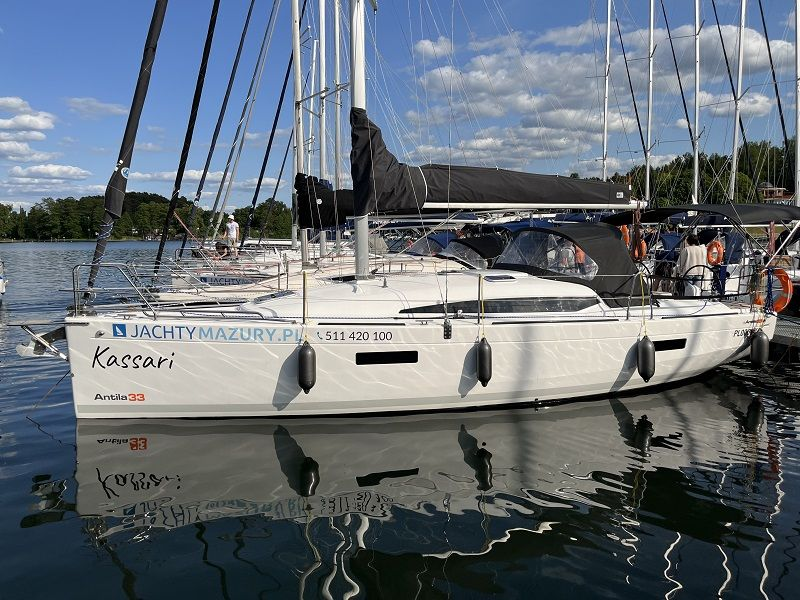

Antila 33
Dostępne jachty Antila 33 w naszej flocie


O modelu Antila 33
Antila 33 to nowoczesny jacht kabinowy, 10 metrów długości, należący do najchętniej wybieranych dużych jednostek turystycznych na Mazurach. Model ceniony jest za bardzo dobre właściwości nautyczne, przestronne wnętrze oraz stabilność przy silniejszym wietrze.
To turystyczny jacht kabinowy zaprojektowany z myślą o komfortowym czarterze dla 8 osób oraz rodzinnych rejsach po Szlaku Wielkich Jezior Mazurskich. Model 33 oraz 33.3 to jedyne jednostki ze stoczni Antila zarejestrowane na 10 osób.
Poniżej znajdziesz szczegółowe informacje: Antila 33 dane techniczne, wymiary, wnętrze, koje, ilość osób oraz orientacyjną cenę.
Antila 33 – dane techniczne
Najważniejsze parametry modelu:
• Długość całkowita: 10,79 m
• Szerokość całkowita: 3,24 m
• Zanurzenie bez miecza / z mieczem: 0,45 m / 1,80 m
• Maksymalna wysokość w kabinie: ok. 1,95 m
• Powierzchnia żagli: 49 m²
• Maksymalna liczba osób załogi: 10
Parametry te sprawiają, że jacht Antila 33 jest stabilny, przewidywalny i dobrze reaguje na ster. Większy balast denny oraz dopracowane proporcje kadłuba przekładają się na spokojne zachowanie jednostki przy silniejszym wietrze, a uchylny miecz umożliwia żeglugę po płytszych akwenach Mazur.
Antila 33 – wymiary i przestrzeń użytkowa
Pod względem przestrzeni Antila 33 oferuje jeszcze więcej miejsca niż modele 30 stopowe. Szerokość ponad 3,2 m przekłada się na komfortową mesę oraz przestronny kokpit z dwoma stanowiskami sterowymi.
Wyższa kabina oraz nowoczesna linia nadbudówki poprawiają ergonomię i doświetlenie wnętrza. To model, który jest wyraźnie większy niż Antila 30. Bardzo komfortowa jednostka na dłuższe czartery bądź większą załogę.
Antila 33 – wnętrze i środek jachtu
Antila 33 wnętrze zaprojektowano w nowoczesnym, jasnym stylu z naciskiem na funkcjonalność i wygodę mieszkalną.
W standardowym układzie znajdziemy:
• Zamykaną kabinę dziobową
• Dwie zamykane kabiny rufowe
• Przestronną mesę z rozkładanym stołem
• Aneks kuchenny (kambuz)
• Oddzielną toaletę z WC morskim i prysznicem.
Antila 33 środek jest dobrze doświetlony dzięki większej ilości okien kadłubowych i luków pokładowych, co poprawia odczucie przestrzeni podczas postoju w porcie.
Antila 33 – koje i ile osób na pokładzie?
Jedno z najczęściej zadawanych pytań brzmi: Antila 33 ile osób pomieści?
Maksymalna liczba miejsc do spania to 10. Komfortowo polecamy 8.
Układ koi obejmuje:
• 2 koje w kabinie dziobowej
• 4 koje w kabinach rufowych
• 4 miejsca w mesie
Antila 33 – czarter
Antila 33 czarter to wybór dla załóg, które oczekują większej przestrzeni, mocniejszego ożaglowania oraz pewności przy silniejszych wiatrach.
Większa powierzchnia żagli oraz solidniejszy balast denny sprawiają, że jacht dobrze radzi sobie przy zmiennych warunkach wiatrowych. Silnik stacjonarny oraz nowoczesne rozwiązania manewrowe tj. dziobowy ster strumieniowy zwiększają bezpieczeństwo w portach Mazur.
To model często wybierany przez załogi z doświadczeniem, które chcą połączyć komfort mieszkalny z dobrymi osiągami pod żaglami.
Antila 33 – cena
Cena czarteru Antila 33 uzależniona jest od:
• sezonu (wysoki / średni / niski),
• standardu wyposażenia konkretnej jednostki,
• długości rejsu.
W sezonie wysokim stawki są wyższe niż w maju, czerwcu czy wrześniu. Aktualny cennik dostępnych jednostek Antila 33 znajduje się w zakładce Cennik.
Przy krótszych i dłuższych rezerwacjach ceny ustalane są indywidualnie.
Najważniejsze informacje
- Długość10,79 m
- Szerokość3,24 m
- Zanurzenie0,45 – 1,80 m
- Miejsca do spania10
- Kabiny3
- Toaletamorska
- Prysznicz ciepłą wodą
- Sterkoło
- Silnikstacjonarny · 21 KM
- Ster strumieniowy1
Dlaczego warto wybrać model Antila 33?
- Nowoczesnego
- Z trzema zamykanymi kabinami
- O wyższej kabinie i bardzo dobrej stabilności
- Dla 8-10 osób
- O dobrych właściwościach nautycznych przy umiarkowanym i silniejszym wietrze
Antila 33 będzie bardzo rozsądną i sprawdzoną opcją.
To model łączący przestrzeń, stabilność i nowoczesną konstrukcję, dlatego utrzymuje dużą popularność wśród osób czarterujących jachty na Mazurach.
Wybrałeś termin?
Sprawdź, które jachty są wolne, albo zadzwoń do nas.